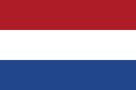
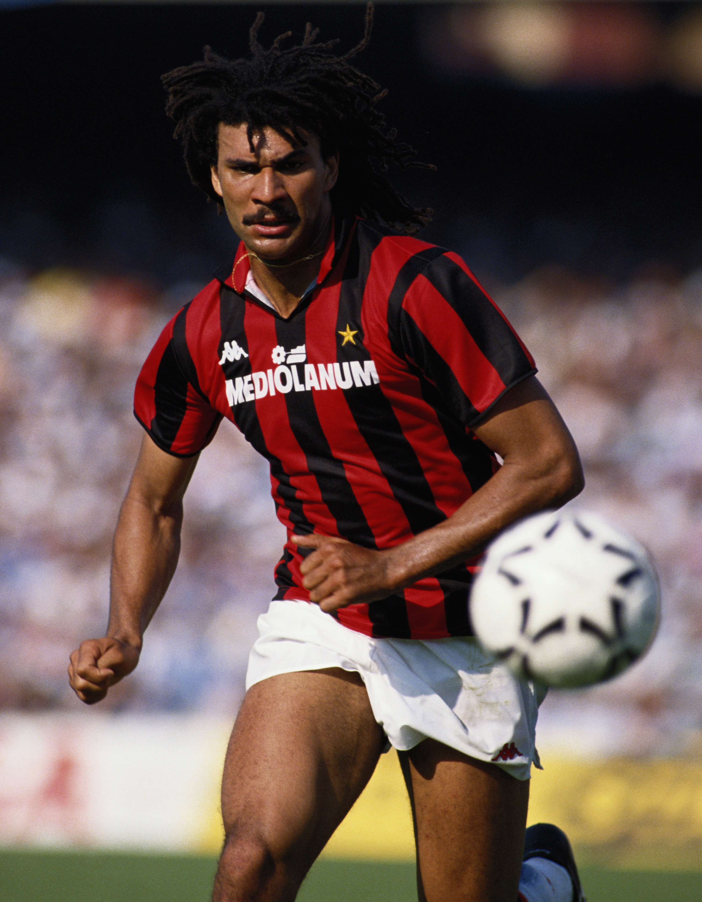
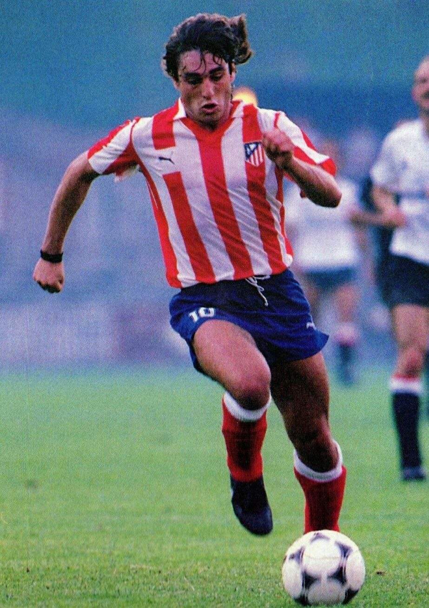

 Ruud Gullit - 1987
- Gullit sur le trône de Johan
Jusqu'à présent, les Pays-Bas n'avaient installé qu'un seul de leurs représentants sur la plus haute marche du podium du Ballon d'Or, mais voici le second.
Nationalité : Hollandaise
Né le : 1er septembre 1962, à Amsterdam (HOL)
Taille : 1,85
Poids : 85 kg
Poste : attaquant puis milieu
Clubs : Meer Boys (1973-1975), DWS Amsterdam (1975-1979), FC Haarlem (1979-1982), Feyenoord Rotterdam (1982-1985), PSV Eindhoven (1985-1987), Milan AC (1987-1993), Sampdoria Gênes (1993-1994), Milan AC (1994), Sampdoria Gênes (1994-1995) et Chelsea (1995-1998)
Palmarès de joueur : Championnat d'Europe des nations 1988 ; Coupe intercontinentale des clubs 1990 ; Supercoupe d'Europe 1990 ; Coupe des champions 1989 et 1990 ; Championnat des Pays-Bas 1984, 1986 et 1987 ; Championnat d'Italie 1988, 1992 et 1993 ; Coupe des Pays-Bas 1984 ; Coupe d'Italie 1994 ; Supercoupe d'Italie 1992 et 1994
Bilan en équipe nationale : 66 sélections A, 17 buts (1981-1994)
Bilan en phase finale de Coupe du monde : 1 participation, 4 matches, 1 but (1990)
Palmarès Ballon d'Or : vainqueur en 1987 et (2e en 1988)
Carrière d'entraîneur : Chelsea (1996-février 1998), Newcastle United (1998-1999), Pays-Bas A (adjoint, mars 2003-juillet 2004) et Feyenoord Rotterdam (depuis juillet 2004)
Palmarès d'entraîneur : Coupe d'Angleterre 1997
Classement du Ballon d’Or France Football 1987 :

Ruud Gullit (Pays-Bas / AC Milan),
106 pts.

Paulo Futre (Portugal / Atletico Madrid),
91 pts.
Emilio Butragueño (Espagne / Real Madrid),
61 pts.
Retour à l'accueil